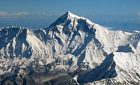

The Natural Wonder's Of the World are basicly structurs that are amzing but are built by the nature and not by us, humen beings.
There are 7 Natural Wonders of the Worls
-

The Greate Blue Hole The Great Blue Hole is a giant marine sinkhole off the coast of Belize. It lies near the center of Lighthouse Reef, a small atoll 70 km (43 mi) from the mainland and Belize City. It was an cave before it submurged under ground
-

The Mount Everest Mount Everest is Earth's highest mountain above sea level, located in the Mahalangur Himal sub-range of the Himalayas.
-

Waitomo Glowworm Caves The Waitomo Glowworm Caves attraction is a cave at Waitomo on the North Island of New Zealand. It is known for its population of Arachnocampa luminosa.
-

The Naigara Falls Niagara Falls is a world-famous natural wonder located on the border between the United States and Canada.